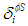

These two indices represent a classification of a residue as beta sheet type according to its value of psi and phi respectively. Both indices are defined as follow:
Where  takes value one if the corresponding psi angle is between 94º and 154º, otherwise takes cero. In the same way takes value one if the corresponding phi angle is between -159º and -99º otherwise takes cero.